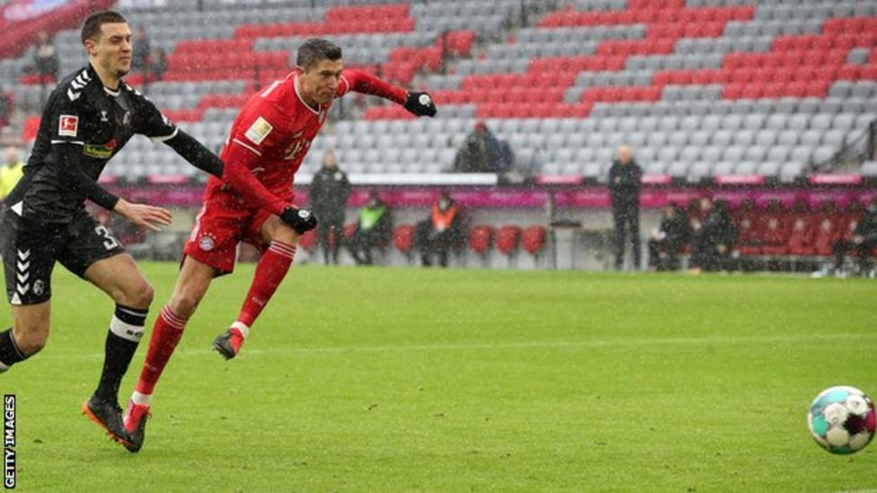

Bayern Munich's Robert Lewandowski set another Bundesliga scoring record as the leaders overcame SC Freiburg.

The Poland striker's early opener saw him become the first player to score 21 goals in the first 16 matches.
Lewandowski, whose 10 goals in the first five games this term also set a record, is on target to surpass Gerd Muller's 40-goal mark set 49 years ago.
Freiburg substitute Nils Petersen levelled with a second-half header before Thomas Muller won it late on.
Bayern, whose German Cup defence ended in midweek when knocked out by second-tier side Holstein Kiel in a penalty shootout, took just seven minutes to take the lead against the Bundesliga's in-form side.
Good work from Serge Gnabry on the right and an excellently weighted first-time pass from Muller found Lewandowski in the box, with the prolific Pole's fine turn and shot beating goalkeeper Florian Muller to his left.
Freiburg had the woodwork to thank for denying Lewandowski a second after the break, with Leon Goretzka's effort on the rebound then well saved, before Petersen levelled with a diving header just moments after coming off the bench.
Muller got on the end of a knock-down pass from Leroy Sane soon after to seal a victory that moves Bayern four points clear at the summit.
Freiburg, however, were unfortunate to have their five-match winning run ended by a defeat after Petersen hit the the crossbar in stoppage time.